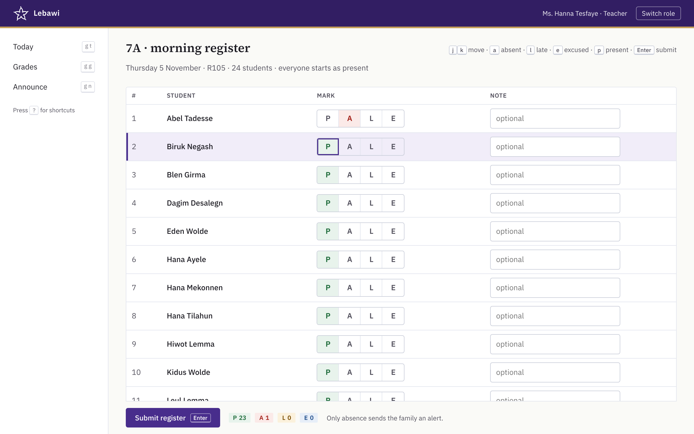
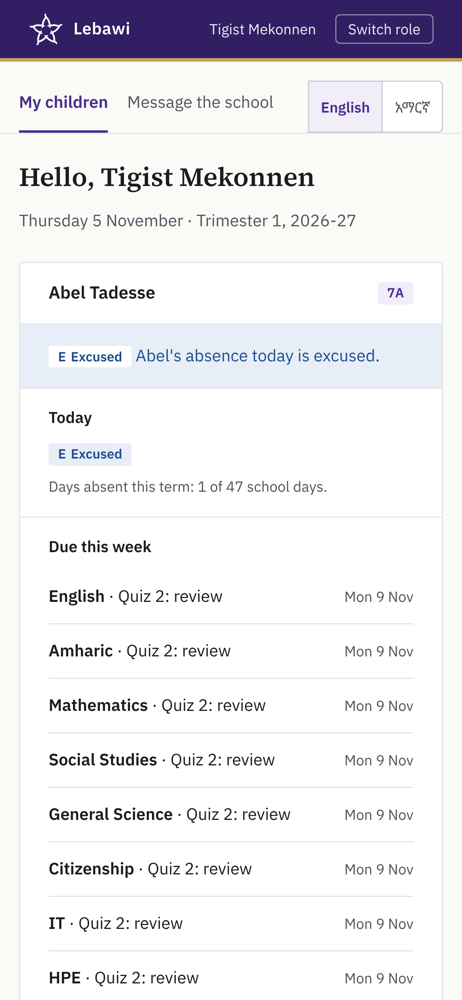
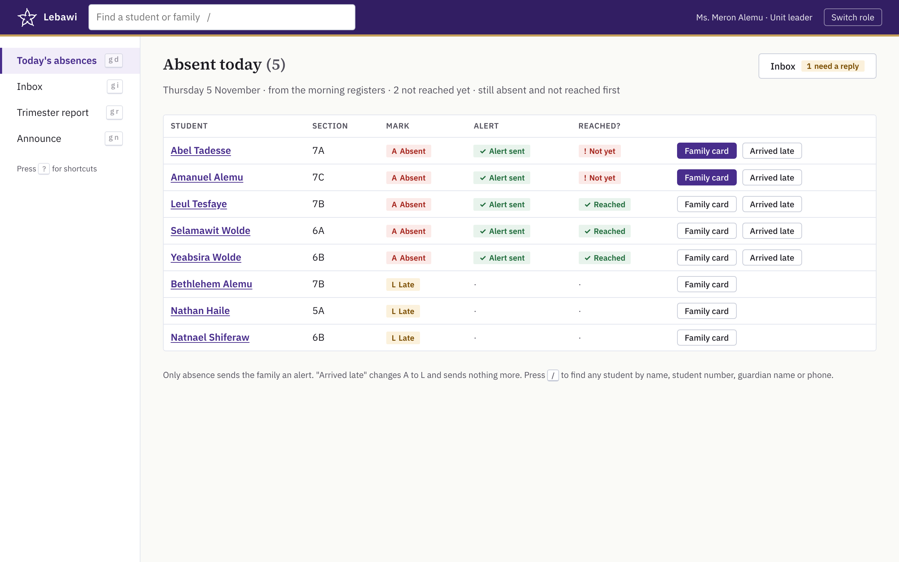
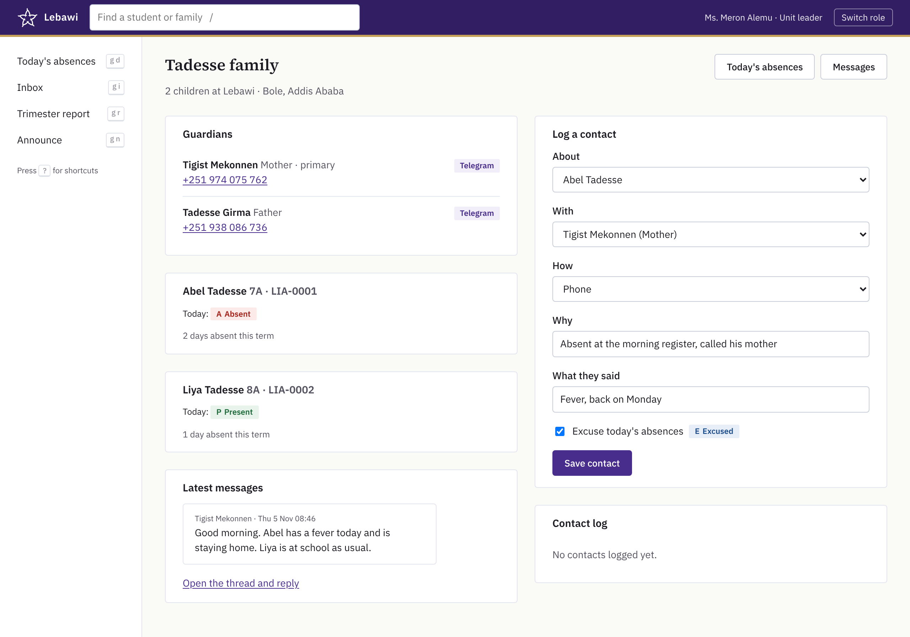
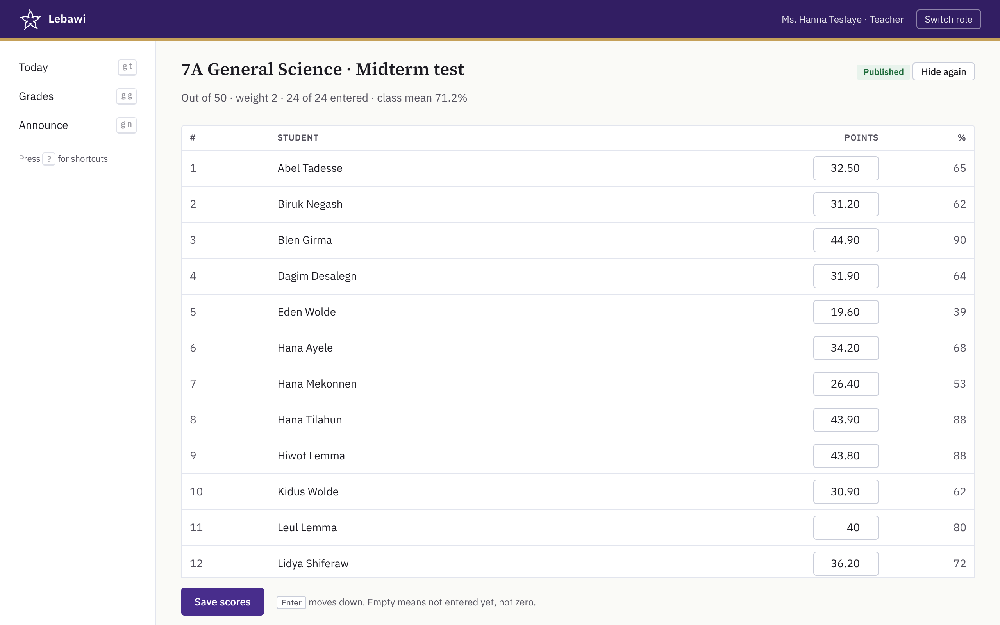
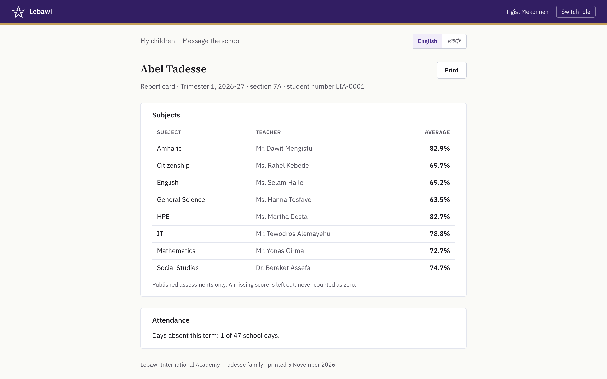
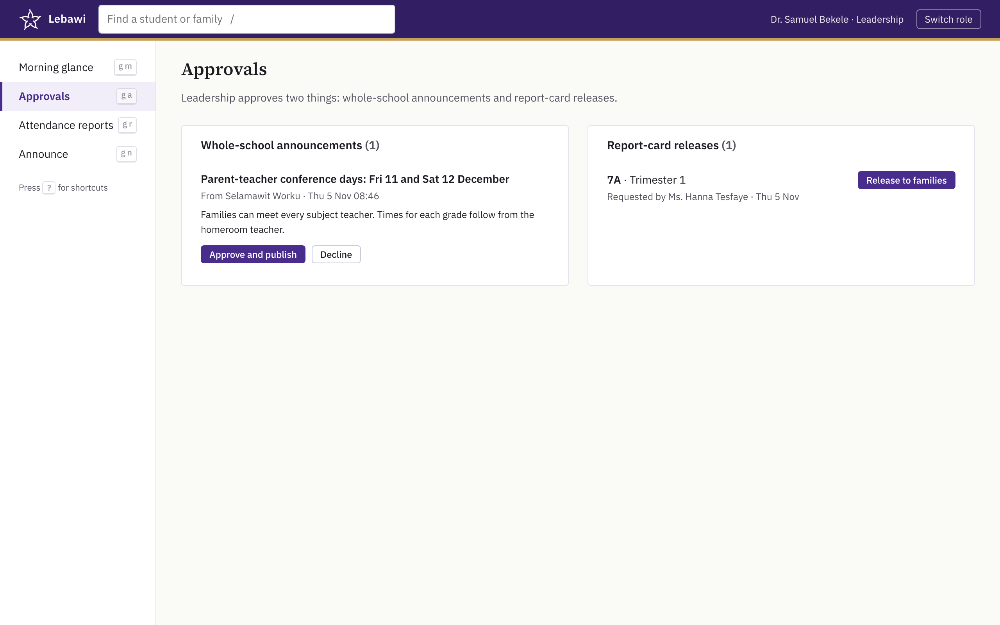

Lebawi
The problem
The same morning, kept in five places.
Each job works. Nothing connects them, so nobody sees the whole picture.
- 01
Attendance
The 08:15 list is on paper.
- 02
Reaching families
Parents hear only if someone gets through on the phone.
- 03
Follow-up
Calls and excuses live in one person's notebook.
- 04
Grades
Scores and report cards are kept apart from everything else. To confirm
- 05
Announcements
All news goes out on one channel, to everyone.
- 06
The whole picture
Nobody sees the whole morning at once.
01 · Attendance
The register takes 30 seconds.
TodayThe 08:15 list is on paper.
- One register a day, by the homeroom teacher.
- Everyone starts present: mark the few exceptions, press Enter.
- Every mark, and every change, is kept.

02 · Reaching families
Parents hear within minutes.
TodayParents hear only if someone gets through on the phone.
- A Telegram alert as soon as the register is in.
- Absence only, at most once a day per child.
- In English or Amharic, as the parent chooses.
Amharic wording to be checked by a native speaker.
Lebawi: Abel was marked absent at the morning register, Thu 05 Nov at 10:30. Reply here if there's a reason.
Lebawi: Abel፦ Thu 05 Nov 10:30፣ የጠዋት ስም ጥሪ — ቀሪ። ምክንያት ካለ እዚህ ይመልሱ።

03 · Follow-up
Every call, in one place.
TodayCalls and excuses live in one person's notebook.
- The unit leader sees today's absentees, families not yet reached first.
- Press /, type a name: the whole family on one card.
- Record the call. Excuse the absence.


04 · Grades and report cards
Scores in one grid. Report cards from the same record.
TodayScores and report cards are kept apart from everything else. To confirm
- Teachers enter scores in one grid, from the keyboard.
- Families see only what the teacher publishes.
- Report cards go home when the director releases them.


05 · Announcements
Written once. Seen by the right people.
TodayAll news goes out on one channel, to everyone.
- A teacher's notice reaches only their section.
- Whole-school news waits for the director, then reaches every page and the channel.

06 · The whole picture
The director's morning, on one screen.
TodayNobody sees the whole morning at once.
- Attendance by grade, and any missing register.
- Students absent on 10 % or more of school days.
- Grades by department, and what's waiting for approval.
07 · Trust
Safe with children's records.
The school's own server
Records stay at the school. Only alert and notice texts go out, through Telegram.
IT holds the keys
The builder works on made-up data only, never real passwords.
Every change is kept
Who changed a mark or a score, when, and from what. Nobody can erase it.
Each sees their part
A teacher their sections, a parent their own children.
Where we'd start
Grade 7 first.
We'd like to start with one grade-7 section, with the paper list running alongside. Grade 7 sits no model exam and no Pearson exit exam, so a mistake there is cheap to fix and never touches a national result. One section is about 25 students, small enough to check every record by hand against the class list. Once it works there, it grows one grade at a time, and high school comes last.
The answer
One record. Five views.
Written once, read by everyone who needs it.
- 1StudentsTimetable, tests ahead, published grades. At home.
- 2TeachersThe register, scores, notices to their sections.
- 3ParentsThe alert, attendance, grades, report cards.
- 4OfficialsUnit leaders follow up; the director sees all and approves. To confirm
- 5School staffThe secretary writes once; it reaches everyone.